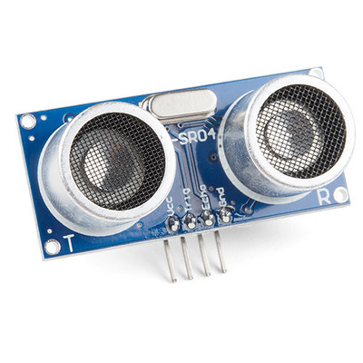
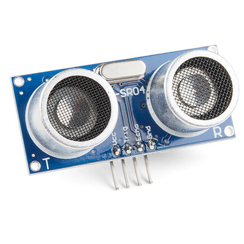

En este apartado vamos a estudiar el funcionamiento de los sensores de distancia o ultrasónicos y haremos prácticas con ellos.

En este apartado vamos a estudiar el funcionamiento de los sensores de distancia o ultrasónicos y haremos prácticas con ellos.

Vamos a hacer una práctica para estudiar el funcionamiento del sensor de ultrasonidos. En concreto, vamos a medir la distancia entre objetos que están próximos comprendidos entre unos cuantos centímetros. Utilizaremos un led que se encenderá cuando haya un objeto a menos de 30 cm.


long readUltrasonicDistance(int triggerPin, int echoPin)
{
pinMode(triggerPin, OUTPUT); // Clear the trigger
digitalWrite(triggerPin, LOW);
delayMicroseconds(2);
// Sets the trigger pin to HIGH state for 10 microseconds
digitalWrite(triggerPin, HIGH);
delayMicroseconds(10);
digitalWrite(triggerPin, LOW);
pinMode(echoPin, INPUT);
// Reads the echo pin, and returns the sound wave travel time in microseconds
return pulseIn(echoPin, HIGH);
}
void setup()
{
pinMode(3, OUTPUT);
}
void loop()
{
if (0.01723 * readUltrasonicDistance(7, 6) < 30) {
digitalWrite(3, HIGH);
delay(300); // Wait for 300 millisecond(s)
digitalWrite(3, LOW);
delay(300); // Wait for 300 millisecond(s)
} else {
digitalWrite(3, LOW);
}
}En esta práctica se plantea el problema de medir la distancia entre objetos simulando el detector de aparcamiento con zumbador. El funcionamiento es el mismo que el que tienen los coches.
AMPLIACIÓN
Se proponen dos situaciones:
Obra publicada con Licencia Creative Commons Reconocimiento Compartir igual 4.0